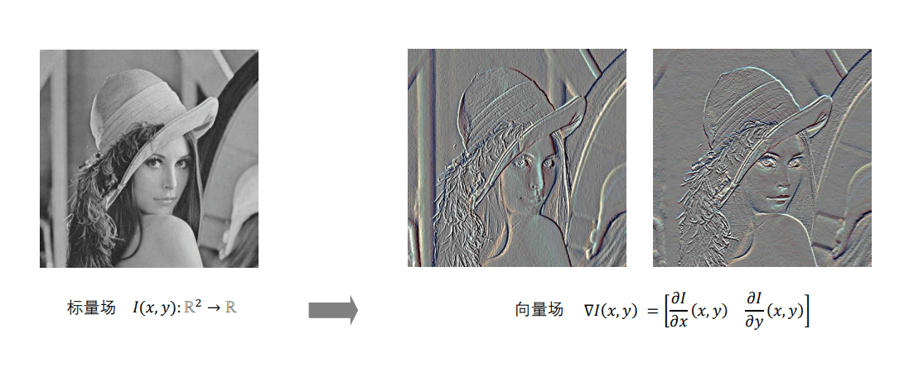
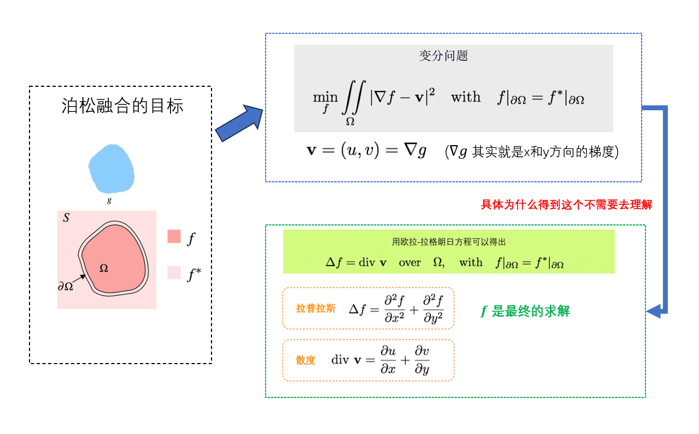

计算摄影学提纲
工作的方向，当时在知乎上的资料很少，成体系的只有 Hawk Wang 老师的分享，但是就这一个却是无比的精品，强烈推荐。
深蓝学院有王老师的课程，花了五百支持了一下，但是内容太过入门了，就简单的 ISP 流程，花这个只是为了表达一下感谢。结果过了半年，突然王老师又开了一门进阶课程，赶紧报上，这次就明显有趣很多，实验也算有些门槛。当时都是工作完之后写写，最后居然还拿了一个最佳学员。
笔记和课程的内容，具体的其实都融进了我个人的 Vision 那一块的知识库中了。下面就简单记录一下这门课的内容。
第一章：HDR
介绍了经典的长短帧曝光融合，这部分内容要找网上也是资料一大把。主要是实验比较有趣，从头做一遍这个长短帧曝光还是挺有意思的。也踩了一些坑点，印象深刻的：
- numpy 中要用高精度 (longdouble) 计算，不然会有零星几个点有问题，让你感觉是溢出导致的。
- CCM 中 LAB 和 RGB 互转要记得是 D50 还是 D65 白点（具体可以看 Vision → 图像处理 → 颜色空间）
第二章：噪声
这个由于经常打交道，所以感觉很重要，在知乎上也有对应的相机噪声文章。我觉得我对这个的理解程度真的是不断循环往复的。
总之我感觉这一章看知乎上的文章就够了。这一章最后一节有一些去噪论文介绍，比如 Learning see in the dark，还有北理工的一些文章，这个其实是研究相机去噪离不开的文章。视频总体比较浅尝辄止，还是需要自己看文章和解读的资料去理解。
第三章：色彩
很不错的视频，当然我觉得要建立在自己看过一些文章的基础上。对于色彩空间，我个人也有一些学习记录。一开始不懂这个的时候确实是一头雾水。
总结起来，这一章的视频可以作为辅助资料，对色彩空间需要自己去主动思考才能理解。
第四章：双边滤波
介绍两个双边滤波相关的论文：
- 加速的文章，即 Piecewise-linear，非常巧妙，用了分段思想，太牛了（在我的
Vision->图像处理->各种滤波中有记录文章） - 联合双边滤波。这个也是经典的方法了，OpenCV 也有对应的方法实现（OpenCV 中实现了，那说明确实经典有用）
实验就是利用上面两个论文，实现闪光 - 非闪光融合这一任务。非常不错，非常有趣，非常有收获的实验。通过实验，对上面两个文章理解加深了特别多。这一章讲的质量很不错，很容易懂。
第五章：梯度处理
挺难的一章节，下面理清一下顺序。
章节的核心思想：如何通过图像的积分求原始图
图像的积分，其实就是两个方向的梯度图。然后本章的核心就是：如何给出梯度图，反推原图。因为后面介绍的一些恢复方法最后需要这个步骤。

用泊松融合示例告诉如何求上面的问题
然后介绍了泊松融合，很突兀。其实逻辑是：上面的问题可以转换为泊松融合。但是我们先不看是怎么转换的，我们还是先去弄懂泊松融合。泊松融合是一个变分问题，这个都不用去理解，反正知道最后转换成了下面的方案。

把图像积分求原始图转成泊松融合求解
好的，上面是泊松融合的求解方程，这个方程有好的处理方法。我们要把章节的核心问题（给定两个方向梯度图，求解原图）转成这个问题，这样我们就能用他们的好方法了。
如何转换？实际上这不就是上面那张图的变分问题吗，即最小化误差呗！只是没有边界处理罢了。上面的 \(\bold{v}\) 就是给定的梯度图，\(f\) 就是要求的原图。边界我们可以假定四周都是和原图一样的。
泊松融合具体求解方法
具体方法就比较细节了，也是第五章讲了很长时间的地方。我觉得我没必要多记录了，这个就具体看视频吧。里面用到了最优化的一些知识，主要是梯度下降和共轭梯度下降。其实，实现起来不难，具体推公式可以打个马虎眼。
闪光非闪光融合
最后就是实验，也是用于说明给定梯度图，求解原图的应用场景。第四章也有闪光非闪光融合，但是有未解决的场景。这个具体看 PPT 前几张就好了。
这一章则可以利用闪光图和非闪光图，用他们的梯度做处理，融合得到新的梯度图。最后就是用章节的核心问题：梯度图返回到原图，用上面所说的泊松融合具体求解方法去做就好了。
整体上实验实现不难，但是当时理解确实理解了很长时间，做完感觉很有收获，当时的报告。